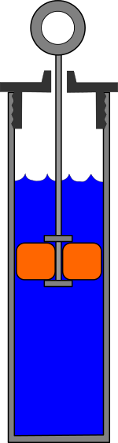
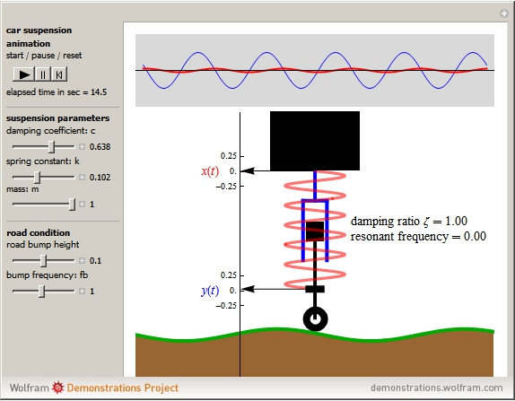
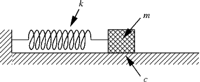
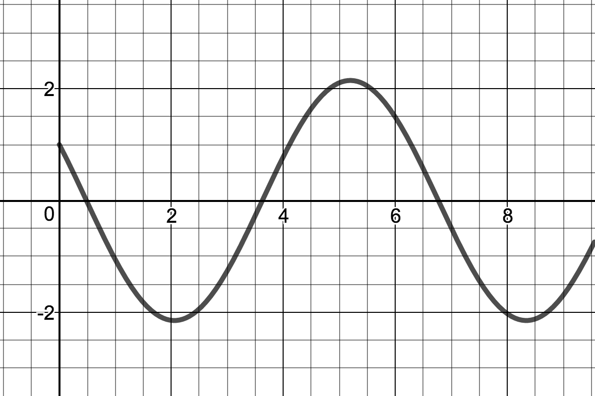
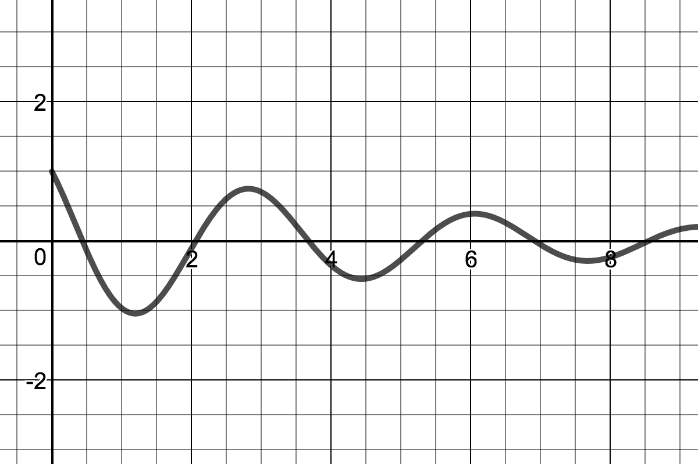
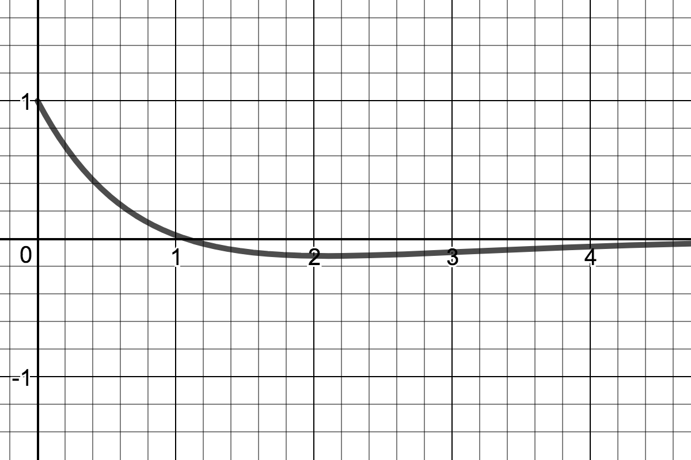
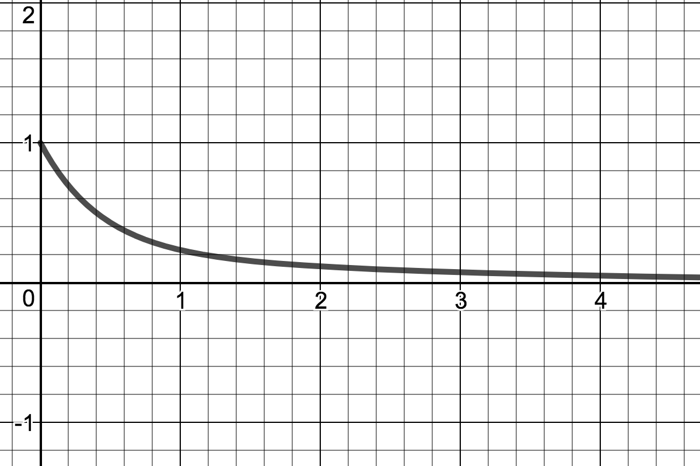
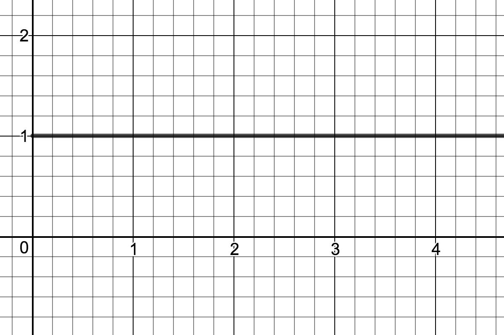

HARMONIC OSCILLATORS
By John Meth
I. Mass-Spring System
Imagine a mass hanging from the ceiling on a spring. You grab the mass and pull it down $1$ meter, stretching the spring. You start a stopwatch and release the mass at the same time, $t = 0.$ We want to create a model for the motion of the mass for $t \geq 0.$
Let's call $y(t)$ the height of the mass at time $t,$ where $y = 0$ is the height of the mass before you grab it. This is when the mass is at equilibrium. Since you pull the mass down $1$ meter and then you release it at time $t=0,$ we have that $y(0)=-1.$ Since you are releasing the mass without adding any velocity (for example, by pushing the mass up or down upon release) we also have $y^{\ \prime}(0) = 0.$
In this model, we only have one force acting on the mass - the spring. The spring wants to return the mass to equilibrium, so it acts against the height of the spring. The amount of force, $F,$ acting on the mass depends on how far away from equilibrium the mass is. That is, the bigger $y(t)$ (the distance from equilibrium), the bigger the force $F$ exerted by the spring to push or pull the mass back to equilibrium. So we have that force depends on $y(t)$ and we want to write down the simplest possible relationship showing this dependence. So we assume the force $F$ is directly proportional to the height $y(t).$ That is
$$
F = c \cdot y(t)
$$
for some constant $c.$ Also, the force acts against the height of the mass. That is to say, if $y(t)$ is positive, then the force $F$ will be negative to push the mass back down to equilibrium, and if $y(t)$ is negative, then the force $F$ will be positive to pull the mass back up to equilibrium. This means that the constant $c$ must be negative, $c < 0.$ Historically, it is more common to call this constant $-k,$ where $k > 0.$ So the force is given by
$$
F = -k \cdot y(t)
$$
where the constant $k$ is positive and depends on the material and strength of the spring. Thus $k$ is called the spring constant.
Finally, we use Newton's second law of motion, which says the force acting on an object equals the object's mass, $m,$ times the object's acceleration. In our case, acceleration is given by $y^{\ \prime \prime}(t),$ giving us
$$
F = m \cdot y^{\ \prime \prime}(t) = -k \cdot y(t)
$$
or
$$
m \cdot y^{\ \prime \prime}(t) + k \cdot y(t) = 0.
$$
When we include the initial position and velocity of our mass, we have an initial value problem
$$
m \cdot y^{\ \prime \prime}(t) + k \cdot y(t) = 0 \ , \quad y(0) = -1 \ , \ \ y^{\ \prime}(0) = 0.
$$
This differential equation models our spring-mass system.
Let us generalize our model slightly. Suppose we are allowed to raise or lower the mass to a height of $A$ meters from equilibrium, and then release it. The model for the motion of the mass is
$$
m \cdot y^{\prime \prime}(t) + k \cdot y(t) = 0 \ , \quad y(0) = A \ , \ \ y^{\ \prime}(0) = 0.
$$
Here, $A$ can be positive or negative. Positive $A$ means the mass was lifted up towards the ceiling and then released. Negative $A$ means the mass was pulled down away from the ceiling and then released.
The characteristic equation for this O.D.E. is
$$
m r^2 + k r = 0
$$
which has imaginary roots
$$
r = \sqrt{\frac{k}{m}} \ i
$$
thus the equation has general solution
$$
y(t) = c_1 \cos \left( \sqrt{\frac{k}{m}} \ t \right) + c_2 \sin \left( \sqrt{\frac{k}{m}} \ t \right).
$$
The initial condition $y^{\ \prime}(0) = 0$ implies $c_2 = 0.$ The initial condition $y(0) = A$ implies $c_1 = A.$ Thus the unique solution to this I.V.P. is
$$
y(t) = A \cdot \cos \left( \sqrt{\frac{k}{m}} t \right).
$$
This solution is called a Simple Harmonic Oscillator. The following link will lead you to a visualization of our model:
https://www.desmos.com/calculator/8aiilztfwj
If you click the play button in row 7, you will see the motion of the mass as it oscillates. If you click the arrow, $\blacktriangleright,$ in row 1, you will reveal the settings for constants $k,$ $m,$ and $A.$ Please experiment with the sliders in rows 2, 3, and 4 to answer the questions below.
Question 1: Suppose the spring constant, $k,$ were to increase. (Although this can be caused by changing the material or the size of the spring, we can imagine an increase in $k$ comes from winding the spring tighter.) How would the motion of the mass change?
- The amplitude of oscillation would increase.
- The amplitude of oscillation would decrease.
- The frequency of oscillation would increase.
- The frequency of oscillation would decrease.
- a and c
- a and d
- b and c
- b and d
Question 2: Suppose the mass, $m,$ were to increase. How would the motion of the mass change?
- The amplitude of oscillation would increase.
- The amplitude of oscillation would decrease.
- The frequency of oscillation would increase.
- The frequency of oscillation would decrease.
- a and c
- a and d
- b and c
- b and d
Question 3: In what way does this model deviate from what you would expect to see in the real world? (You can experiment with
anything attached to a spring.)
- The amplitude of oscillation would increase over time.
- The amplitude of oscillation would decrease over time.
- The frequency of oscillation would increase over time.
- The frequency of oscillation would decrease over time.
- a and c
- a and d
- b and c
- b and d
II. Mass-Spring-Dashpot System
In practice, we do not expect the motion of a mass on a spring to behave like a Simple Harmonic Oscillator. We expect, over time, that the oscillations will decrease in amplitude. This means that our mathematical model,
$$
m \cdot y^{\ \prime \prime}(t) + k \cdot y(t) = 0 \ , \quad y(0) = A \ , \ \ y^{\ \prime}(0) = 0.
$$
has not accounted for all forces present. In fact, this model is accurate in a vacuum, such as the vacuum of space, but not on earth. What forces are present on earth that may cause a loss of energy?
One obvious suspect is gravity, but this is actually accounted for in our model (gravity is offset by the spring - hence equilibrium of the spring hanging from the ceiling.) The reason the mass eventually stops oscillating is wind resistance.
We began by using Newton's second law of motion to produce the equation
$$
F = m \cdot y^{\ \prime \prime}(t) = -k \cdot y(t).
$$
Here, the right hand side represents the forces at work on the mass - in this case, just the spring. We would like to account for the resistance imposed on the mass by moving through a medium such as air or water.
Newton's second law says that the sum of forces on an object will equal the object's mass times its acceleration. So we must sum this new force with our old force, the force of the spring. That is, we're looking to fill in the following equation:
$$
F = m \cdot y^{\ \prime \prime}(t) = -k \cdot y(t) + \begin{array}{|c|} \hline \\ \quad \quad \\ \hline \end{array}
$$
We want to fill the box with a quantity that reflects the force of resistance from moving through a medium using the following logic: motion through the medium works against the velocity of the mass, i.e. it slows the mass down. That is to say, the resistance of the medium is directly proportional to the mass's velocity, $y^{\prime}(t)$, and works in the opposite direction. Thus the force is given by
$$
- c \cdot y^{\ \prime}(t)
$$
where $c > 0$ is a constant called the damping constant (also called the
drag coefficient), and depends on the medium. This gives us
$$
F = m \cdot y^{\prime \prime}(t) = -k \cdot y(t) - c \cdot y^{\prime}(t)
$$
or
$$
m \cdot y^{\ \prime \prime}(t) + c \cdot y^{\ \prime}(t) + k \cdot y(t) = 0.
$$
Consider a mass-spring system which has a mass of $1$ kg $(m = 1)$ attached to a spring with spring constant $1 \ N/m \ \ (k = 1)$ and stretched down $4$ meters before being released at time $t = 0$ $(y(0) = -4 , y^{\ \prime}(0)=0.)$ Also assume the object is moving through a medium with a small damping constant, $c,$ $0 < c < 2.$ Then our model is the differential equation
$$
y^{\ \prime \prime}(t) + c \cdot y^{\ \prime}(t) + y(t) = 0 \ , \quad y(0) = -4 \ , \ \ y^{\ \prime}(0) = 0.
$$
The solution to this differential equation is the function
$$
y(t) = -e^{\left( - \frac{c}{2} \cdot t \right)} \cos \left( \frac{\sqrt{4-c^2}}{2} \cdot t \right) + \frac{c}{\sqrt{4-c^2}} e^{\left( - \frac{c}{2} \cdot t \right)} \sin \left( \frac{\sqrt{4-c^2}}{2} \cdot t \right).
$$
A visualization of the solution is here:
https://www.desmos.com/calculator/gnch83a2re
If you click the play button in row 5, you will see the motion of the mass as it oscillates. If you click the arrow, $\blacktriangleright,$ in row 3, you will reveal the settings for the damping constant, $c.$ Notice that the default setting is $c = .1.$ Please experiment with the slider in row 4 to answer the questions below.
Question 4: Suppose the damping constant, $c,$ were to increase. In this example, let $c \rightarrow 2^{-}$ (let $c$ approach $2$ from the left). How would the motion of the mass change?
- The amplitude of oscillation would increase over time.
- The amplitude of oscillation would decrease over time.
- The frequency of oscillation would increase over time.
- The frequency of oscillation would decrease over time.
- a and c
- a and d
- b and c
- b and d
Question 5: Suppose the damping constant, $c,$ were set to $2.$ Then our differential equation is
$$
y^{\ \prime \prime}(t) + 2 \cdot y^{\ \prime}(t) + y(t) = 0 \ , \quad y(0) = -4 \ , \ \ y^{\ \prime}(0) = 0.
$$
What is the solution to this differential equation?
Question 5: Suppose the damping constant, $c,$ were set to $2.$ How would the motion of the mass change?
- The amplitude of oscillation would increase over time.
- The amplitude of oscillation would decrease over time.
- The frequency of oscillation would increase over time.
- The frequency of oscillation would decrease over time.
- The mass would not oscillate.
- The mass would continue falling until it hit the floor.
- The mass would go through the ceiling.
III. Harmonic Oscillators
Our Mass-Spring-Dashpot System is an example of a Harmonic Oscillator. Harmonic oscillators are solutions to certain second-order differential equations that model the phenomenon of vibration. Wikipedia says:
"Mechanical examples include pendulums (with small angles of displacement), masses connected to springs, and acoustical systems. Other analogous systems include electrical harmonic oscillators such as RLC circuits. The harmonic oscillator model is very important in physics, because any mass subject to a force in stable equilibrium acts as a harmonic oscillator for small vibrations. Harmonic oscillators occur widely in nature and are exploited in many manmade devices, such as clocks and radio circuits. They are the source of virtually all sinusoidal vibrations and waves."
https://en.wikipedia.org/wiki/Harmonic_oscillator
"One reason why spring-mass-dashpot systems are so useful in mechanical systems: they can be used to damp out any undesirable disturbances. For example, the shock transmitted to an automobile by a bump in the road is dissipated by the shock absorbers in the car, and the momentum from the recoil of a gun barrel is dissipated by a spring-mass-dashpot system attached to the gun."
Braun, Martin. Differential Equations and Their Applications
And in case you were wondering what a dashpot is:
"A dashpot is a mechanical device, a damper which resists motion via viscous friction.[1] The resulting force is proportional to the velocity, but acts in the opposite direction,[2] slowing the motion and absorbing energy. It is commonly used in conjunction with a spring (which acts to resist displacement). The process and instrumentation diagram (P&ID) symbol for a dashpot is ."
https://en.wikipedia.org/wiki/Dashpot
|

|
Below is a figure from a Wolfram Alpha demonstration simulating vehicle suspension.

In that case, the shock absorber is the dashpot. Usually you see a picture like this:

Those pictures use three constants - $c,$ $k,$ and $m$ - and they mean the same thing in both pictures and those are also the constants Braun uses in section 2.6. These are the same constants we use in our differential equation
$$
m \cdot y^{\ \prime \prime}(t) + c \cdot y^{\ \prime}(t) + k \cdot y(t) = 0.
$$
There are three cases:
-
Simple Harmonic Oscillator: This is a mass spring system where there is no damping, $c = 0.$ Braun calls these "free vibrations".
-
Damped Harmonic Oscillator: This is a mass spring system where there is damping, $c > 0.$ Braun calls these "damped free vibrations".
-
Driven Harmonic Oscillator: This is a mass spring system with an external force, $g(t),$ acting on the mass:
$$
m \cdot y^{\ \prime \prime}(t) = - c \cdot y^{\ \prime}(t) - k \cdot y(t) + g(t)
\quad \Rightarrow \quad
m \cdot y^{\ \prime \prime}(t) + c \cdot y^{\ \prime}(t) + k \cdot y(t) = g(t).
$$
These produce nonhomogeneous second order O.D.E.'s with constant coefficients. An example is the vehicle suspension figure, above, with $g(t)$ given by the height of the road. (This term, $g(t),$ is $y(t)$ in their figure, and their solution is $x(t).)$
An interactive visualization of all three cases is here:
https://www.desmos.com/calculator/g5ygcagenl
- Case 1: Simple Harmonic Oscillator
When $c = 0,$ our equation becomes
$$
m y^{\prime \prime} + k y = 0
$$
which has characteristic equation
$$
mr^2 + k = 0
$$
with complex solutions
$$
r = \pm \sqrt{-\frac{k}{m}} = \pm \, \, i \cdot \sqrt{\frac{k}{m}}.
$$
These give us the following general solution to the homogeneous equation:
$$
y_c(t) = c_1 \cos \left( \sqrt{\frac{k}{m}} \cdot t \right) + c_2 \sin \left( \sqrt{\frac{k}{m}} \cdot t \right).
$$
Initial conditions will turn this O.D.E. into an I.V.P. Usually these are given as
- An initial position, $y(0) = y_0.$ Imagine holding the mass, lifting it (compressing the spring) or pulling it (stretching the spring), and then releasing the mass.
- An initial velocity, $y^{\prime}(0) = v_0.$ Imagine tapping the mass, giving it an upward or downward velocity at time $t = 0.$
Using these initial conditions to solve for our constants $c_1$ and $c_2$ gives
$$
y_c(t) = y_0 \cdot \cos \left( \sqrt{\frac{k}{m}} \cdot t \right) + \frac{v_0}{\sqrt{\frac{k}{m}}} \cdot \sin \left( \sqrt{\frac{k}{m}} \cdot t \right)
$$
Lemma 1 in section 2.6 of Braun uses simple trigonometric identities to represent such a function as a single shifted cosine function:
$$
y(t) = R \cdot \cos \left( \omega \cdot t - \delta \right)
$$
$$
R = \sqrt{y_0^2 + \frac{m}{k} v_0^2} \quad \quad \quad \quad \omega = \sqrt{\frac{k}{m}} \quad \quad \quad \quad \delta = \tan^{-1}\left( \frac{v_0}{y_0} \sqrt{\frac{m}{k}} \right)
$$
The relevant piece is that every one of these graphs looks like a cosine graph that's been shifted and stretched.
- Case 2: Damped Harmonic Oscillator
When $c > 0,$ our equation becomes
$$
m y^{\prime \prime} + c y^{\prime} + k y = 0
$$
which has characteristic equation
$$
mr^2 + cr + k = 0
$$
with solutions
$$
r = \frac{-c \pm \sqrt{c^2 - 4mk}}{2m}.
$$
Let $\Delta = c^2 - 4mk,$ the discriminant of the characteristic equation. This breaks Case 2 into subcases:
- $\Delta < 0,$ underdamped
- $\Delta = 0,$ critically damped
- $\Delta > 0,$ overdamped
- Case 2 (a): Underdamped Harmonic Oscillator; $\Delta < 0$
With $\Delta < 0$ we get two complex solutions to our characteristic equation and our general solution to the homogeneous O.D.E. is:
$$
y_c(t) = e^{- \frac{c}{2m} t} \left[ c_1 \cos \left( \frac{\sqrt{4mk-c^2}}{2m} \cdot t \right) + c_2 \sin \left( \frac{\sqrt{4mk-c^2}}{2m} \cdot t \right) \right]
$$
Again, initial conditions will turn this O.D.E. into an I.V.P. Using these initial conditions to solve for our constants $c_1$ and $c_2$ gives
$$
y_c(t) = e^{- \frac{c}{2m} t} \left[ y_0 \cos \left( \frac{\sqrt{4mk-c^2}}{2m} \cdot t \right) + \left( \frac{2mv_0 + cy_0}{\sqrt{4mk-c^2}} \right) \sin \left( \frac{\sqrt{4mk-c^2}}{2m} \cdot t \right) \right]
$$
Simple Harmonic Oscillator
(No Damping) |
Underdamped Harmonic Oscillator
(Some Damping) |
|  |
 |
- Case 2 (b): Critically Damped Harmonic Oscillator; $\Delta = 0$
With $\Delta = 0$ the characteristic equation has root
$$
r = -\frac{c}{2m} = -\sqrt{\frac{k}{m}} \quad \quad \textrm{ (using } \Delta = c^2 - 4mk = 0 \textrm{.)}
$$
with multiplicity $2$ (a double root.) In this case, our solution is
$$
y(t) = \left( c_1 + c_2 t \right) e^{-\sqrt{\frac{k}{m}} \cdot \, t}
$$
and solving for $c_1$ and $c_2$ using initial conditions yields
$$
y(t) = \left[ y_0 + \left( v_0 + \sqrt{\frac{k}{m}} y_0 \right) t \right] e^{-\sqrt{\frac{k}{m}} \cdot \, t}
$$
- Case 2 (c): Overdamped Harmonic Oscillator; $\Delta > 0$
Let
$$
r_+ = \frac{-c + \sqrt{c^2 - 4mk}}{2m} \quad \quad \textrm{ and } \quad \quad r_- = \frac{-c - \sqrt{c^2 - 4mk}}{2m}
$$
then $\Delta > 0$ implies that both roots are real and negative. So we get the following general solution to the homogeneous equation:
$$
y_c(t) = c_1 e^{(r_+) t} + c_2 e^{(r_-) t}
$$
Again, initial conditions will turn this O.D.E. into an I.V.P. Using these initial conditions to solve for our constants $c_1$ and $c_2$ gives
$$
y_c(t) = \left( \frac{y_0 r_- - v_0}{r_--r_+} \right) e^{(r_+) t} + \left( \frac{v_0 - y_0 r_+}{r_--r_+} \right) e^{(r_-) t}
$$
Note that we can also consider the solution when the damping becomes infinite:
$$
\lim_{c \rightarrow \infty} r_+ = 0 \quad \quad \textrm{ and } \quad \quad \lim_{c \rightarrow \infty} r_- = -\infty \textrm{.}
$$
Thus
$$
\lim_{c \rightarrow \infty} y_1(t) = \lim_{c \rightarrow \infty} e^{(r_+) t} = e^{0 t} = 1
$$
$$
\lim_{c \rightarrow \infty} y_2(t) = \lim_{c \rightarrow \infty} e^{(r_-) t} = e^{- \infty t} = 0
$$
$$
\lim_{c \rightarrow \infty} c_2 = \lim_{c \rightarrow \infty} \left( \frac{v_0 - y_0 r_+}{r_--r_+} \right)
= 0
$$
and since $c_1 = y_0 - c_2$ we get
$$
\lim_{c \rightarrow \infty} c_1 = \lim_{c \rightarrow \infty} y_0 - c_2 = y_0
$$
Finally, we see
$$
\lim_{c \rightarrow \infty} y(t) = \lim_{c \rightarrow \infty} c_1 y_1 + c_2 y_2 = y_0 \cdot 1 + 0 \cdot 0 = y_0
$$
Here are summaries of the different solutions and their properties:
| $\Delta, c$ | Solutions: |
| $c = 0 , \quad \Delta < 0$ |
$$y(t) = c_1 \cos \left( \sqrt{\frac{k}{m}} \cdot t \right) + c_2 \sin \left( \sqrt{\frac{k}{m}} \cdot t \right)$$
|
| Name: | Graph: |
| Simple Harmonic Oscillator |
|
| Behavoir: |
|---|
| Mass oscillates forever without changing amplitude or frequency. |
| $\Delta, c$ | Solutions: |
| $c > 0, \quad \Delta < 0$ |
$$y(t) = e^{- \alpha t} \Big[ c_1 \cos \left( \beta t \right) + c_2 \sin \left( \beta t \right) \Big] $$
|
| Name: | Graph: |
| Underdamped Harmonic Oscillator |
|
| Behavoir: |
|---|
| Mass oscillates with constant frequency and diminishing amplitude. |
| $\Delta, c$ | Solutions: |
| $c = 2 \sqrt{mk}, \quad \Delta = 0$ |
$$y(t) = \Big( c_1 + c_2 t \Big) e^{-\sqrt{\frac{k}{m}} \, t}$$
|
| Name: | Graph: |
| Critically Damped Harmonic Oscillator |
 |
| Behavoir: |
|---|
| Unique, fastest solution returning mass to equilibrium without oscillation. |
| $\Delta, c$ | Solutions: |
| $c > 0, \quad \Delta > 0$ |
$$y(t) = c_1 e^{- r_1 t} + c_2 e^{-r_2 t}$$
|
| Name: | Graph: |
| Overdamped Harmonic Oscillator |
 |
| Behavoir: |
|---|
| Mass takes longer and longer to return to equilibrium as $c \rightarrow \infty.$ |
| $\Delta, c$ | Solutions: |
| $c \rightarrow \infty, \quad \Delta \rightarrow \infty$ |
$$y(t) = y_0$$
|
| Name: | Graph: |
| Infinitely Damped Harmonic Oscillator |
 |
| Behavoir: |
|---|
| Mass never moves from initial position $y(t) = y_0.$ |